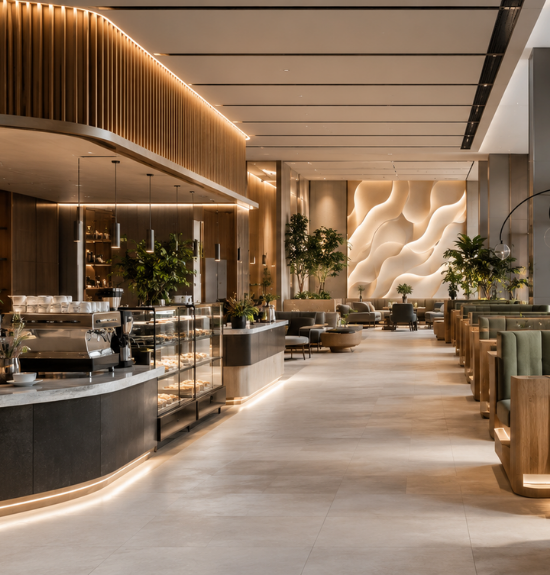
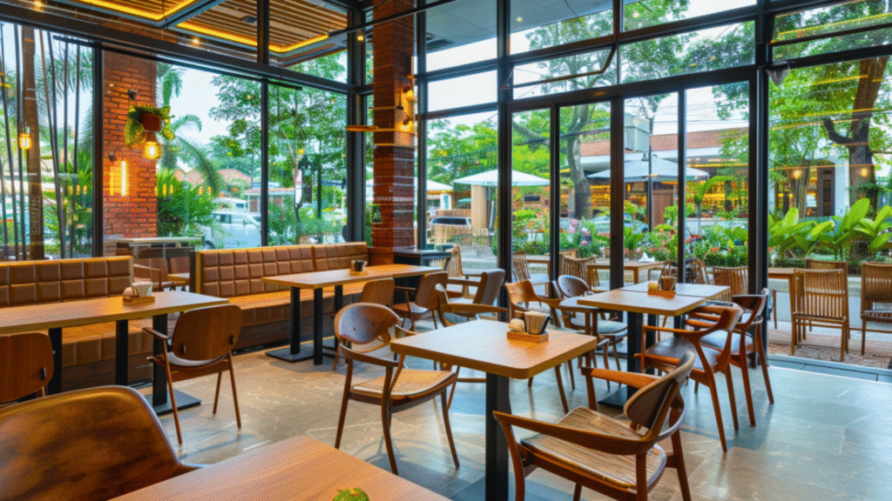
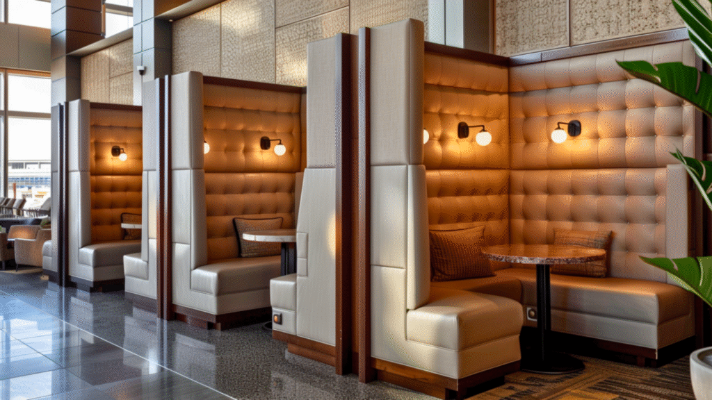
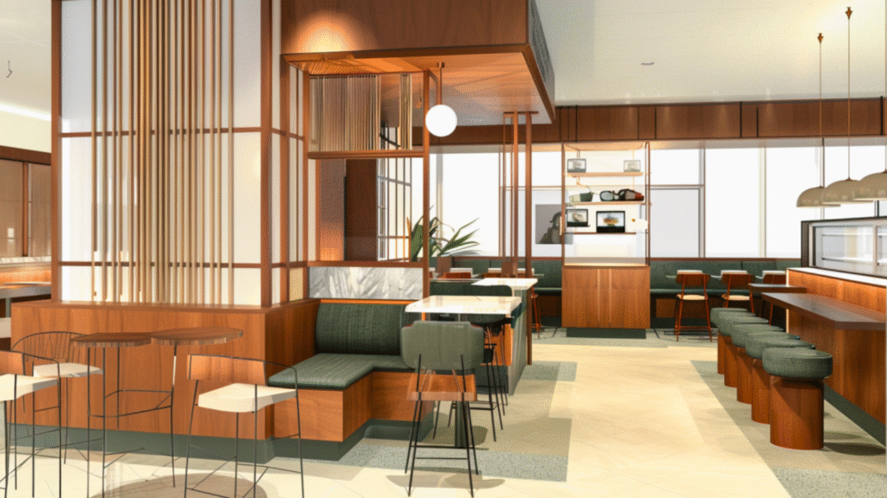
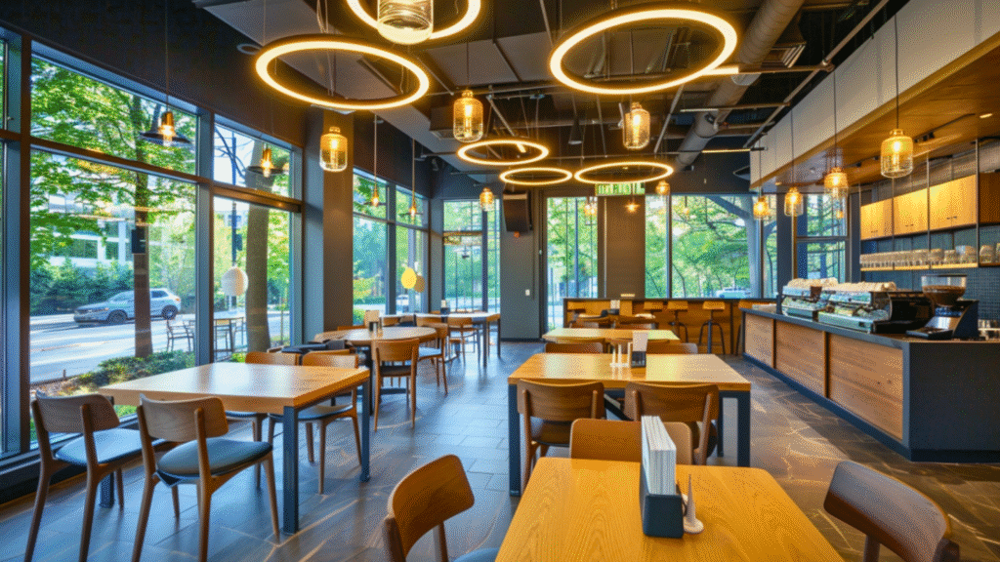

Cafés and airports might seem like completely different worlds—one is about cosy corners and slow sips, the other about rushing to catch a flight. But if you take a closer look, airports are masters of spatial psychology—specifically, how to maximise dwell time and engagement through design.
Think about it: Once you clear security at an airport, the space around you subtly guides your behaviour—wide corridors lead you past retail zones, lighting shifts create a sense of ease and strategically placed seating encourages you to linger (and spend). This isn’t accidental. It’s an intentional design.
Now, what if your café’s interiors could tap into these same principles? Here’s how airport design can teach café owners a thing or two about customer retention, optimized layouts, and a seamless guest experience.
1. The “Security Zone” Effect—Why Customers Relax & Stay Longer

Ever noticed how once you’re past security at an airport, you breathe a little easier? The hardest part is over, and suddenly, you’re open to browsing, exploring, and staying longer.
Cafés can replicate this psychological shift by designing spaces that move customers from “transaction mode” (ordering) to “comfort mode” (staying).
How to Apply This in Your Café’s Design:
- Separate the ordering & seating zones: Instead of customers feeling stuck in a high-traffic counter area, use spatial dividers or different flooring materials to signal a transition.
- Seating as a destination: A well-designed seating layout draws people in—softer lighting, slightly recessed booths, or cosy nooks create a subconscious pull to sit down.
- Wayfinding & flow: Subtle design elements like floor patterns, ceiling changes, or visual cues can naturally guide customers deeper into the café instead of making them feel like lingering is an afterthought.
2. Airports Optimize Every Inch—Is Your Café Doing the Same?
Airports leave no space unused—whether it’s retail islands, lounge-style seating, or passageways designed for impulse stops. Every square foot serves a function.
For cafés, wasted space is wasted revenue. That underutilized corner, awkward entryway, or barren wall? It should be working for you through smart design solutions.
How to Apply This in Your Café’s Design:
- Activate “dead zones”—That awkward corner? Add a high-top standing area with built-in shelves for a dynamic, grab-and-go spot. Empty walls? Use feature shelving with carefully curated décor to create depth and character.
- Create movement-friendly layouts—Place visually engaging design elements (like a statement lighting fixture or an eye-catching partition) between the counter and seating to encourage natural movement deeper into the space.
- Multi-functional furniture—Airports use seating that doubles as workstations. Cafés can do the same with benches featuring built-in storage, movable tables, or tiered seating for a layered, immersive effect.
3. The Boarding Call Strategy—Creating Subtle Design-Driven Urgency

Airports nudge travellers into action—whether it’s through last-call announcements, time-limited duty-free deals, or wayfinding cues that direct foot traffic toward revenue-generating zones.
Cafés can use similar design nudges to encourage movement and decision-making.
How to Apply This in Your Café’s Design:
- Time-sensitive zones—Create a distinct morning vs. evening atmosphere using dynamic lighting shifts, subtle colour temperature changes, or adaptable seating layouts. A well-lit, high-energy space for the morning rush can transform into a warmer, ambient setting by evening.
- Pre-closing ambience cues—Airports use lighting shifts to indicate transitions. Your café can subtly signal the end of the day through dimmer lighting, soft music changes, or rearranged furniture layouts that encourage final orders.
- Seating that directs behaviour—Taller communal tables near entrances = high turnover. Plush, booth-style seating deeper inside = extended stays. Use design to influence how long guests stay.
4. Multi-Zone Seating—Why Every Café Should Have “Lounge-Like” Spaces

Airports don’t rely on one-size-fits-all seating. There are quiet zones, social spaces, quick-grab counters, and work-friendly lounges—each catering to different traveller needs.
Cafés should embrace this approach to attract a broader customer base. Instead of uniform seating, create multiple zones that serve different purposes.
How to Apply This in Your Café’s Design:
- Work-friendly spaces—A well-lit, semi-private seating area with power outlets can attract freelancers, students, and remote workers, encouraging longer stays.
- Casual social tables—Large communal tables with softer lighting create an inviting setting for social groups while boosting table efficiency.
- Cozy nooks—Strategic booth designs, alcoves, or intimate seating arrangements offer a sense of privacy for solo visitors who might stay longer if they feel comfortable.
- Outdoor adaptability—An outdoor seating extension with flexible partitions, retractable awnings, or subtle greenery can create a whole new dimension of customer engagement.
Final Boarding Call: Are You Designing for Customer Behavior?

Airports don’t just hope travellers will spend—they design for it. Your café should do the same.
- Guide customers through a seamless journey—from ordering to settling in and staying longer.
- Maximize every inch of space—every corner should serve a purpose.
- Use lighting, layout, and flow to create zones that influence behaviour.
- Encourage lingering, not just ordering—design should make staying feel natural, not forced.
Because when you design not just for aesthetics, but for behaviour, your café stops being just a coffee spot—it becomes a destination where people want to linger, return, and truly experience the space.